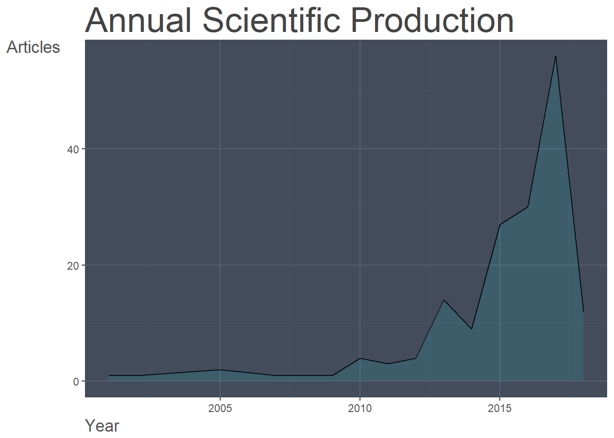

This is an example of the implementation of the bibliometric analysis for the topic of digital innovation,
This example is based in the use of the blibliometrix package for R.
## bibliometrix version: 1.9.2For further information about the bibliometrix package and its instances, visit http://bibliometrix.org.
The analysis follows the workflow described by the package authors’ Aria & Cuccurullo (2017), which consists of:
library(package = bibliometrix) # Contains the bibliometric functions## To cite bibliometrix in publications, please use:
##
## Aria, M. & Cuccurullo, C. (2017) bibliometrix: An R-tool for comprehensive science mapping analysis, Journal of Informetrics, 11(4), pp 959-975, Elsevier.
##
## http:\\www.bibliometrix.orgThis dataset was obtained from Clarivate Analytics’ Web of Science. This data include the results of a search on the term “digital innovation” within 2000 and 2018. This datasets contains the information of 166 publications registered on the Web of Science’ Core collections. This dataset provides information about these publications such as: authors, title, journal, keywords, abstract, cited references, times cited, year of publication for a total of 25 attributes per publication.
bm <- readFiles("0_data/wos-digital_innovation-2000-2018.bib")
bm <- convert2df(bm, dbsource = "isi", format = "bibtex")## Articles extracted 100
## Articles extracted 166The first part of the analysis consists of reviewing the main details of the literature body.
bm_analysis <- biblioAnalysis(bm, sep = ";")
bm_summary <- summary(object = bm_analysis, k = 10, pause = FALSE)##
##
## Main Information about data
##
## Articles 166
## Sources (Journals, Books, etc.) 130
## Keywords Plus (ID) 374
## Author's Keywords (DE) 500
## Period 2001 - 2018
## Average citations per article 5.717
##
## Authors 351
## Author Appearances 421
## Authors of single authored articles 42
## Authors of multi authored articles 309
##
## Articles per Author 0.473
## Authors per Article 2.11
## Co-Authors per Articles 2.54
## Collaboration Index 2.66
##
##
## Annual Scientific Production
##
## Year Articles
## 2001 1
## 2002 1
## 2005 2
## 2007 1
## 2008 1
## 2009 1
## 2010 4
## 2011 3
## 2012 4
## 2013 14
## 2014 9
## 2015 27
## 2016 30
## 2017 56
## 2018 12
##
## Annual Percentage Growth Rate 19.42201
##
##
## Most Productive Authors
##
## Authors Articles Authors Articles Fractionalized
## 1 HJALMARSSON A 10 HJALMARSSON A 3.33
## 2 JOHANNESSON P 10 JOHANNESSON P 3.33
## 3 JUELL-SKIELSE G 9 FRIEDMAN BM 3.00
## 4 LYYTINEN K 5 JUELL-SKIELSE G 3.00
## 5 BERENTE N 4 GRAY M 2.00
## 6 YOO Y 4 RADOIU D 2.00
## 7 ARTS K 3 YOO Y 1.92
## 8 FRIEDMAN BM 3 NAMBISAN S 1.75
## 9 LINDGREN R 3 VOM BROCKE J 1.53
## 10 MATHIASSEN L 3 BOUDREAU KJ 1.50
##
##
## Top manuscripts per citations
##
## Paper TC
## 1 YOO Y;HENFRIDSSON O;LYYTINEN K,(2010),INF. SYST. RES. 157
## 2 YOO Y;BOLAND RJ;LYYTINEN K;MAJCHRZAK A,(2012),ORGAN SCI. 137
## 3 LUSCH RF;NAMBISAN S,(2015),MIS Q. 124
## 4 BOUDREAU KJ,(2012),ORGAN SCI. 85
## 5 FICHMAN RG;DOS SANTOS BL;ZHENG ZE,(2014),MIS Q. 45
## 6 NAMBISAN S,(2013),J. ASSOC. INF. SYST. 43
## 7 BARRETT M;OBORN E;ORLIKOWSKI WJ;YATES JA,(2012),ORGAN SCI. 37
## 8 ARTS K;VAN DER WAL R;ADAMS WM,(2015),AMBIO 26
## 9 YOO Y,(2013),J. ASSOC. INF. SYST. 25
## 10 MIDDLETON KM,(2001),J. MORPHOL. 22
## TCperYear
## 1 19.62
## 2 22.83
## 3 41.33
## 4 14.17
## 5 11.25
## 6 8.60
## 7 6.17
## 8 8.67
## 9 5.00
## 10 1.29
##
##
## Most Productive Countries (of corresponding authors)
##
## Country Articles Freq SCP MCP
## 1 USA 33 0.2185 28 5
## 2 ENGLAND 21 0.1391 12 9
## 3 SWEDEN 15 0.0993 11 4
## 4 AUSTRALIA 9 0.0596 9 0
## 5 ITALY 9 0.0596 8 1
## 6 SWITZERLAND 6 0.0397 2 4
## 7 GERMANY 5 0.0331 2 3
## 8 NETHERLANDS 5 0.0331 4 1
## 9 SPAIN 5 0.0331 3 2
## 10 CANADA 4 0.0265 4 0
##
##
## SCP: Single Country Publications
##
## MCP: Multiple Country Publications
##
##
## Total Citations per Country
##
## Country Total Citations Average Article Citations
## 1 USA 632 19.152
## 2 ENGLAND 162 7.714
## 3 SWEDEN 33 2.200
## 4 BRAZIL 26 13.000
## 5 SCOTLAND 26 8.667
## 6 AUSTRALIA 20 2.222
## 7 CANADA 10 2.500
## 8 SWITZERLAND 9 1.500
## 9 GERMANY 6 1.200
## 10 NETHERLANDS 6 1.200
##
##
## Most Relevant Sources
##
## Sources
## 1 OPEN DIGITAL INNOVATION: A CONTEST DRIVEN APPROACH
## 2 MIS QUARTERLY
## 3 2015 48TH HAWAII INTERNATIONAL CONFERENCE ON SYSTEM SCIENCES (HICSS)
## 4 AMBIO
## 5 APOLLO-THE INTERNATIONAL ART MAGAZINE
## 6 ORGANIZATION SCIENCE
## 7 REVOLUTIONS IN BOOK PUBLISHING: THE EFFECTS OF DIGITAL INNOVATION ON THE INDUSTRY
## 8 JOURNAL OF THE ASSOCIATION FOR INFORMATION SYSTEMS
## 9 BUSINESS HORIZONS
## 10 ICERI2014: 7TH INTERNATIONAL CONFERENCE OF EDUCATION RESEARCH AND INNOVATION
## Articles
## 1 10
## 2 7
## 3 4
## 4 4
## 5 4
## 6 4
## 7 4
## 8 3
## 9 2
## 10 2
##
##
## Most Relevant Keywords
##
## Author Keywords (DE) Articles Keywords-Plus (ID) Articles
## 1 DIGITAL INNOVATION 31 TECHNOLOGY 17
## 2 INNOVATION 22 KNOWLEDGE 11
## 3 DIGITAL 8 MODEL 11
## 4 OPEN INNOVATION 5 DIGITAL INNOVATION 10
## 5 CASE STUDY 4 INNOVATION 10
## 6 DIGITAL TECHNOLOGIES 3 DESIGN 9
## 7 ENTREPRENEURSHIP 3 INTERNET 8
## 8 INFORMATION TECHNOLOGY 3 PERSPECTIVE 8
## 9 MOBILE PHONE 3 SYSTEMS 8
## 10 NATURE CONSERVATION 3 PERFORMANCE 7Additionally, it is possible to plot the descritive statistics of the workd done in this field.
plot(x = bm_analysis, k = 10)
## Warning: Removed 1 rows containing missing values (position_stack).## Warning: Removed 1 rows containing missing values (geom_path).As observed in the summary, there are some misinterpretations made by the database algorithms; for this reason it is necesary to clean the data in the first places. Some of the common mistakes are duplicates, misspellings, and incoherent values, these errors are addressed in this initial stage.